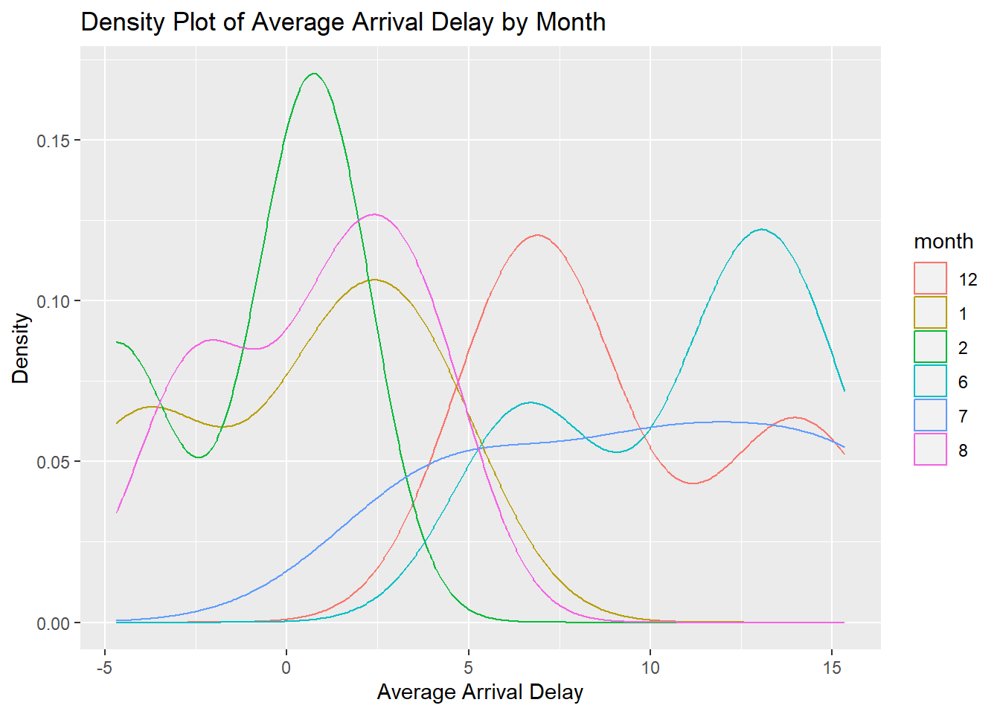

library(tidyverse)
library(ggplot2)
library(dplyr)
library(nycflights13)HW 1
Problem 1
# create a data frame from flights with the following attributes:
# - months 12, 1, 2, 6, 7, and 8
# - carriers UA, AA, and DL
# - distance greater than 700
# - average arr_delay by month
flights %>%
filter(month %in% c(12, 1, 2, 6, 7, 8) & carrier %in% c("UA", "AA", "DL") & distance > 700) %>%
group_by(month) %>%
summarise(arr_delay = mean(arr_delay, na.rm = TRUE)) %>%
arrange(month) %>%
print()# A tibble: 6 × 2
month arr_delay
<int> <dbl>
1 1 0.521
2 2 -1.10
3 6 11.4
4 7 10.5
5 8 1.35
6 12 9.79 Problem 1.a
In a single plot, create a density plot for arr_delay for each of the 6 months with color aesthetic designated by month. Note that you need to convert month to a factor in order to create the plot. What can you say about the average arr_delay for each month?
# convert month to factor
flights %>%
filter(month %in% c(12, 1, 2, 6, 7, 8) & carrier %in% c("UA", "AA", "DL") & distance > 700) %>%
mutate(month = factor(month)) %>%
ggplot(aes(x = arr_delay, color = month)) +
geom_density() +
labs(title = "Average Arrival Delay by Month", x = "Arrival Delay (min)", y = "Density")Warning: Removed 1307 rows containing non-finite values (`stat_density()`).